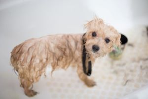

Pet Grooming
Pet grooming is something that we take seriously here at Noah’s Ark. Not only does it help your pet look his/her best, it is also vital for their health and well-being. When groomed regularly, diseases can be prevented and diagnosed early. That is why all our employees working in our pet salon are all highly qualified and experienced individuals.
Packages Offered
Below we have a list of pet grooming services that we provide. Keep in mind that while our packages are more geared towards cats and dogs, nearly all of them can be customized to fit the needs of most furry pets. If you have any questions regarding this, do not hesitate to ask.
| Package | Description | Price |
|---|---|---|
| Pet Manicure | This service includes nail trimming and pad shaving. If desired, your pet's nails can also be coated with a non-toxic paint color of your choice. This will leave your pet's paws in great condition! | $ |
| Bath and Brush | Over the course of a 45-minute period, your pet will be bathed with a flea treatment shampoo and brushed. Your pets coat will be shiny, soft, and most importantly, clean! Great to fight of shedding and pet dander. Nail trimming, pad shaving, teeth brushing, and ear cleaning included. | $$ |
| Bath, Brush, and Cut | Your pet will be treated to a luxury flea treatment bath and then trimmed with the directions given by you. We have a list of recommendations for styles if you find yourself stumped. Your pet will feel like a new animal after we're done with them! Nail trimming, pad shaving, teeth brushing, and ear cleaning included. | $$$ |
| Spa Treatment | In this comprehensive service, your pet will be treated like a king/queen. After being bathed, brushed, and trimmed, your animal friend will be sprayed with a pet perfume of your choice. Some of our popular scents include blueberry, lavender, eucalyptus & spearmint, lilac, sugar cookie, and jasmine & vanilla. Following this, a relaxing massage will also be given to your pet, which will leave him/her feeling refreshed. Nail trimming, pad shaving, teeth brushing, and ear cleaning included. | $$$$ |
To book an appointment for your pet, please visit our Contact Us page.